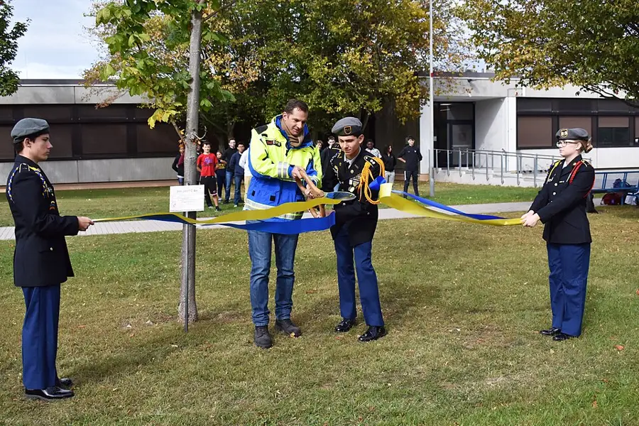

Adopt-a-Tree Year Log
One tree, adopted for a whole year: measured monthly, watched through every season, and handed on to next year's custodians with its log.
Ages 13–1430–45 min4 materials
- Ages
- 13–14
- Group
- 3–16 kids
- Time
- 30–45 min
- Where
- Outdoors
- Prep
- Some prep needed

Setup
Choose the tree before the group is offered the adoption, and choose it like a custodian, not a romantic: reachable in all weathers, on ground the group is allowed to stand on, with a clear fixed point for the photograph and room around the trunk for the whole group to gather without trampling the root zone into mud. Learn its name if it has one, a plaque, a groundskeeper, an older student who remembers, and if its species is uncertain, leave the question open in the log's first page rather than guessing: an honest 'not yet known' is this record's founding entry. Mark the photograph spot with something that survives (a paving edge, a painted stone set by permission), and walk the first visit yourself: you are checking sightlines, footing after rain, and whether the tape can pass around the trunk without anyone reaching through branches at face height.
Materials
- one adoptable tree on the site (a tree the group can reach weekly without crossing any boundary the adults set. Its name, species if known, and story are the year's first research job)
- the year log itself (a hardback notebook that lives with the adults between visits, weatherproofed in a sealed bag, because a log that dissolves in October teaches nothing about November)
- a long tape measure that can pass around a trunk (or a length of string and a ruler. The string method is older than the tape and just as honest)
- a camera or one volunteer's phone for the fixed-point photograph (the same marked standing spot every visit, so the year's change is comparable, frame to frame)
Steps
- First visit, the adoption itself: the group walks to the tree and the record's framing is said under it, plainly: 'This tree was here before this group arrived, and it will be here after this group leaves. We are not planting it and we are not studying it for a week. We are adopting it for a year: we will come back every month, we will measure what can be measured, we will write down what we actually see, and at the end of the year we will hand its log to next year's group, who will know this tree's year because we kept it honestly. Custodians, not owners. The tree does not need us. The log does.' The adoption is signed in the log's first page by every custodian present, with the date, and the first fixed-point photograph is taken before anything else happens, because every later photograph is measured against it.
- Baseline round, the year's numbers: the trunk's circumference is measured at a marked height (a ribbon tied loosely, never nailed, never taped tight to bark, at chest height, recorded in the log so every later measurement is taken at the same honest place); the canopy's spread is paced out in two directions; the ground beneath is described in the log's plain categories, leaf litter, bare earth, grass, fallen fruit or seed, signs of visitors. Every measurement is taken twice, by two different custodians, and if the two disagree, both are written down and a third is taken: the log's rule is stated now and kept all year. 'We write what we measured, not what we expected. A surprising number is data. A copied number is fiction.'
- The monthly protocol, established at the first visit so every later visit runs the same way and the months stay comparable: photograph from the fixed point first; circumference at the ribbon; canopy noted; then the month's phenology page. The year's real events, in the order the tree does them: first bud, first leaf, full leaf, flower if it flowers, fruit or seed if it sets any, first colour change, first leaf fall, bare. Each event gets the date it was FIRST seen and the name of the custodian who saw it, because 'first seen by' is the log's honour system and it makes sharp-eyed custodians of the whole group. A month where nothing has changed is written up as exactly that, 'March: no change at the ribbon; buds still shut; the log is not disappointed', because a year log that only records drama is a story, not a record.
- Season pages, four across the year, written at the visit nearest each turn: each season page answers the same three questions in the custodians' own words, what is the tree doing, what is living on or under it, what has the weather done to it since the last season page, and the fixed-point photographs for the season are described in words beside their dates (the log is paper; the photographs live with the adults, and the descriptions are how the log keeps them). Disagreements are recorded as disagreements: if two custodians read the canopy differently, both readings go in, signed. The log is teaching a discipline most adults never learn. That a careful record of one ordinary tree, kept for one whole year, is a scientific document, and that its authority comes from its honesty about the boring months, not despite them.
- Final visit, the handover: the year's last photograph is taken, the ribbon is checked and left as found, and the group writes the log's closing page together. The year's three biggest changes, the measurement they trust most and why, the question they are handing on unanswered ('the hollow on the north side: we never learned what lives there'), and one piece of advice to next year's custodians, earned the slow way. The log is handed over at full ceremony when the new group adopts the tree, read aloud at the trunk, the closing page first, and the outgoing custodians' names stay on the adoption page permanently: 'Kept by' is the title this record gives its workers, and it is earned monthly, in all weathers, at the pace a tree keeps.
Variations
Easier: A term-length version: adopt for one school term with visits every fortnight, the protocol identical, the season pages compressed, the handover made to the next term's group.
Harder: A two-tree version (a confident second-year group): two trees of different species kept in parallel logs, with a comparison page each season. The differences between two honest records are where the real learning compounds.
⚠️ Safety
The tree is never climbed, not to measure, not to photograph, not for the closing ceremony: every measurement in this record is designed to be taken from the ground, and a custodian who wants a higher view gets the fixed-point photograph's honest answer, which is that some things are recorded as 'not seen', in ink. Visits run in ordinary daylight and ordinary weather; a thunderstorm, ice underfoot, or a wind strong enough to move big branches cancels the visit, and the log records the cancellation as data ('January visit lost to storm, the tree kept its own counsel'). The root zone is walked on gently and never dug; nothing is nailed, screwed, or tied tight to the tree. The ribbon is loose, checked monthly, and removed the moment it marks the bark. Hands are washed after visits; anything the tree drops is looked at, logged, and left. Nothing from the tree is eaten, ever, identified or not.
🤝 Inclusion notes
Custodianship divides into jobs at every reach: the tape is read by one pair of hands and called aloud by another; the photograph can be directed from the fixed point by a custodian who frames the shot in words while a partner works the camera; the log itself welcomes every register. A phenology entry can be written, dictated to the visit's scribe, drawn to scale, or given as the spoken 'first seen by' report the scribe records verbatim with the spotter's name attached. The fixed point and the gathering ground are chosen at setup for step-free access, and a custodian who cannot make a given month's visit still signs its page: long-keeping is the job, and the log has a line, kept honestly all year, for custodians present in the record when they could not be present at the trunk.
⭐ Tried this? Rate it
Your ratings live in this browser only. Nobody else can see them. There are no community ratings here; every star on this card is yours.
Rate this activity, add a note, or write a reflection
✏️ Quick reflection
Optional, saved with your rating, and exported with "📋 Copy my week".
Full activity card,